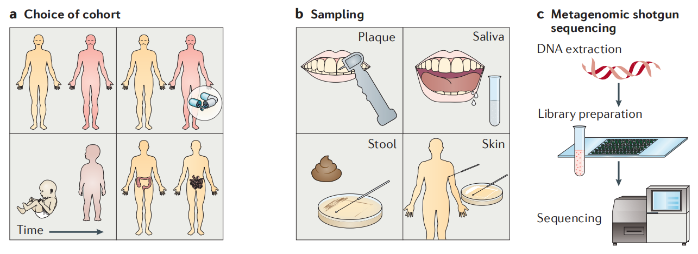
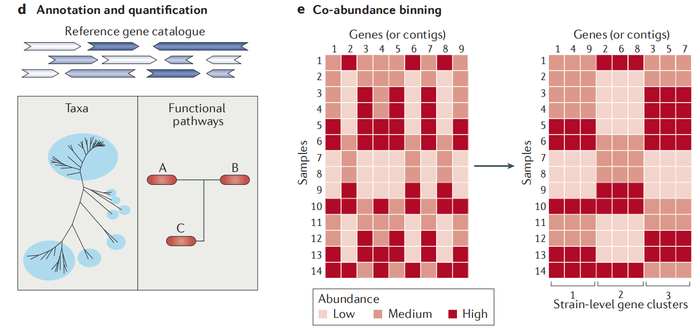
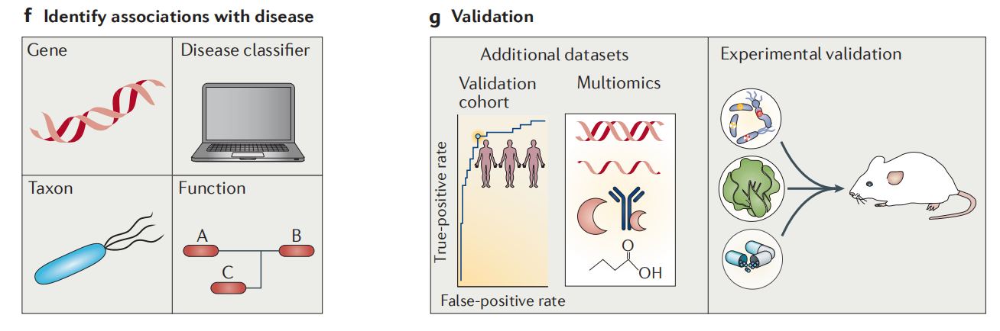

Metagenome-wide association studies (MWAS) have enabled the high-resolution investigation of associations between the human microbiome and several complex diseases, including type 2 diabetes, obesity, liver cirrhosis, colorectal cancer and rheumatoid arthritis.
- the identification of taxa that are more or less abundant, as is the case with taxanomic approaches
- the identification of microbial functions that are enriched or depleted
goal: inform the prevention, diagnosis and treatment of human disease in the future.
Some conceptions
Microbiome: The ensemble of microbial genomes and products at a given site.
Microbiota: The ecological community of microorganisms at a given site.
16S rRNA gene amplicon sequencing: Amplification and sequencing of the variable regions in 16S ribosomal RNA genes for the taxonomic profiling of bacteria and archaea in a sample.
16S rRNA gene amplicon sequencing is widely used but the data produced are of limited use in several aspects, owing to a poor taxonomic resolution and an absence of information about the function of the microbiome.
Metagenomic shotgun sequencing, in which the full complement of genes that are present in the microbiome are sequenced rather than just a single taxonomic marker gene, is able to overcome these limitations by providing information about the abundances of genes in functional pathways and at all taxonomical levels.
In the current forms of MWAS, the relative abundance of a gene in a metagenomes is used to establish an association with a disease of interest, typically after the genes are first grouped into strain-level clusters known as metagenomic linkage groups (MLGs), metagenomic clusters (MGCs) or metagenomic species (MGS), which reduces the dimensionality of the data.
Designing and carrying out an MWAS
Metagenomic sequencing and assembly
Requirement: sufficient volume of sequencing data is obtained to enable reliable quantitative comparisons between samples, as the number of genes that are detected in any given sample increases with the volume of sequencing data until saturation.
Difficulties:
- faecal samples: sequencing reads from the host account for no more than 1% of the total. However, for non-faecal samples: dominated by sequencing reads from the host, even several Gb of raw sequence data may be insufficient.
- experimental removal of host DNA without affecting the microbial content of the samples remains challenging, although bioinformatic tools can be used to remove host sequences after sequencing.
Microbial reference gene catalogues
A non-redundant gene catalogue can be constructed from a metagenome assembly by predicting genes from the assembled contigs and removing highly similar genes across samples, which are considered to be redundant.
The abundances of genes, taxa and functions in metagenomic datasets can be quantified by alignment to such a gene catalogue to identify associations with a disease of interest.
Note: constructing a gene catalogue from a poor-quality metagenome assembly can artificially increase the number of genes.
Taxonomy from metagenomic data
One goal: identify associations between the disease that is being investigated and specific taxa.
To increase taxonomic resolution to the level of strains, genes in a metagenomic dataset can be clustered according to the genome of origin.
Based on the idea: genes from the same microbial genome are physically linked and should have the same pattern of abundance variation to one anotheer across many samples.
Organize microbial genes in metagenomic data into strain-level clusters known as metagenomic linkage groups (MLGs), metagenomic clusters (MGCs) or metagenomic species (MGS).
Sequence alignment to existing microbial genome sequences are typically used to assign genes or strain-level clusters to taxa.
The alignment of conserved single-copy genes and strain-specific regions of the genome may be more useful than other loci for taxanomic annotation.
Incorporation of addistional information, such as GC content and tetra-nucleotide frequency, might help to separate clusters that could not be resolved using abundance variation, which has been a particular problem in datasets with a small number of samples.
Controlling for phenotypes in MWAS
Include extensive metadata that enable factors that influence the microbiota to be controlled for.
Cohorts should then be matched according to these metadata rather than using statistical regression methods that would undermine the power of MWAS to control for confounding factors.
Note: for associations that are identified by MWAS that have a small effect size, a larger sample size might be required to distinguish the association from background variation.
Identifying associations using MWAS
Although MWAS can, in principle, be used to study associations between the microbiome and any trait, studies to date have focused on identifying associations between the microbiome and disease.
1) A typical cohort : a group of healthy individuals and a group of individuals with a disease.
2) Longitudinal study: before and after a certain intervention.
3) Natural process: such as the development of an infant or the progression of a disease.
4) Compare the microbiomes at different body sites for a cohort of individuals with a disease.

- gene catalogue
Bioinformatics tools are used to assemble the metagenomic reads into contigs. Genes that are predicted from contigs are compiled into a gene catalogue, or an existing reference gene catalogue that is representative of the data could be readily used.
- sample relative abundance
The relative abundance of a gene can be quantified by determining the number of sequencing reads that align to that gene in the reference catalogue.
- grouping of the predicted genes
Phylogenetic or functional annotation and grouping of the predicted genes allows the quantification of microbial taxa or functional pathways in the samples and comparisons between samples.
Genes (or contigs, which can contain several genes and intergenic regions) that have abundances that co-vary in samples can be clustered into strain-level taxonomic units (known, according to the clustering algorithm used, as metagenomic linkage groups (MLGs), metagenomic clusters (MGCs) or metagenomic species (MGS)).

- associations with a disease
Associations with a disease can be identified for individual microbial genes, taxa or functions.
In addition, classifiers can be constructed using supervised machine learning to assign each sample to a certain category, such as healthy or diseased.
